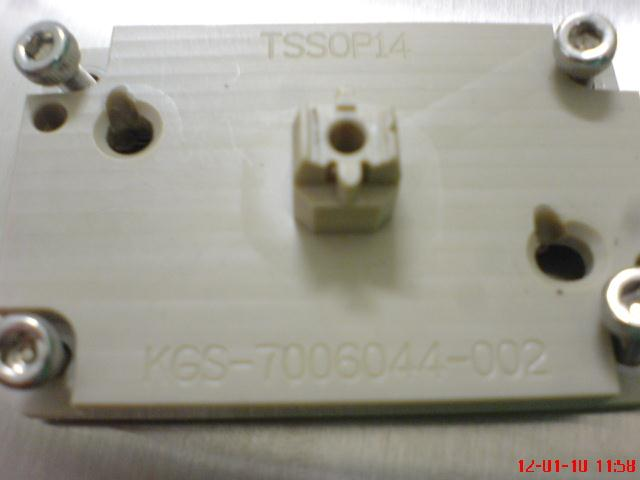
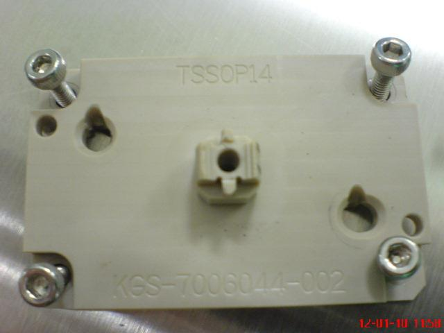
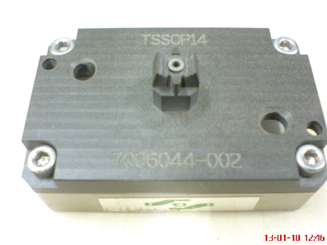
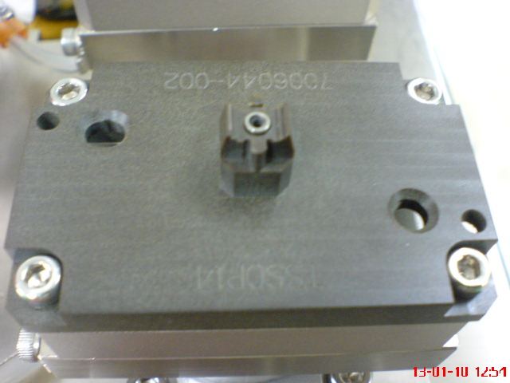
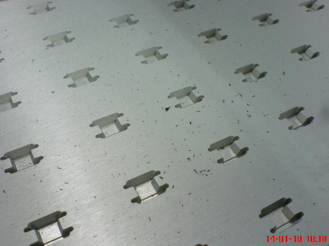
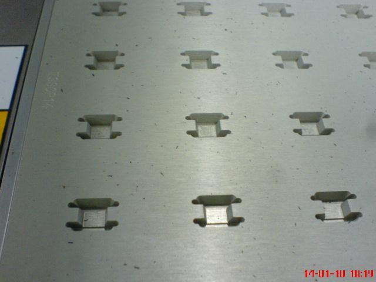

Service History
Subject: NEC(M) NS-7000 Index Arm Torque error
Handler Model: NS-7000 (S/N: 181350)
Controller: RC520
Date: 13 Jan 2010
Symptom
Was informed that handler down due to index arm torque error.
Action
Check handler history and found many RC520 controller error for index arm over the night.
- Recovered the error and tried to run handler. Observed output shuttle 1 and 2 jerking when index arm pick up device from input shuttles.
- Stop handler and removed index SLK. Found many sites nest damaged(pls refer to attached picture). Replaced total 7pcs of TSSOP 14p nests. Also tighten up some loose fittings on the SLK and replaced 1 white teflon gasket with a dark color(peek?) gasket.
|
 |
 |
- Fixed back SLK and start alignment check on index arm P50 and P51 pose on input shuttles. Index arm alignment to socket pose is fine. But alignment on shuttle is NG. After adjustment shuttle pose is; P23=302.926(original=303.597), P24=303.483(original=303.797).
- After alignment completed, also adjusted input shuttle floating sensor and device present sensor as the sensors cannot detect floating and device present. Checked index arm vacuum units and adjusted threshold. Lowered contact force by regulator to 0.1Mpa from 0.2Mpa. Contact parameter setting is direct & soft contact, tried direct contact mode. Still encountered device stucked in socket at site C after testing when index arm moved up.
- Swapped socket between A and C, device stuck error improved a little. Swapped the whole socket plate(include socket) with another old TSSOP 14p socket plate(include socket) and handler can run fine without any device stuck in socket for 2 Dut TSSOP 14p setup.
- Convert 2 Dut to 4 Dut TSSOP 14p setup and fine tuning. Completed 4 Dut 1/5000 hot jamrate with 100% running speed with 1 floating jam offline(with socket but no testing).
- Release handler to production and set back running speed to 70%. Monitored a while and will feedback results tomorrow morning.
Regarding for KA's activities the night before, i don't think they helped much and had little findings. Basically they came, did some checks, bring back SLK and only ran 1 and half tray of device and went back. Not sure if this was the intented plan for them but anyway Sean will update their activities following my mail.
13/01/10 Acivities
- Handler encountered some device drop error on index arm 2 over the night. Also Site A(Dut 4) failed bin 2.
- Replaced socket, swapped whole Dut, swapped new C/K contactor with old C/K contactor, tried original short plunger spring and original long plunger spring, tried longer start delay time, increase and decrease contact height. Problem(Site A failed bin 2) still persist.
- Disable Site A and temporary run handler with 3 Duts. No jamming encountered.
- Reboot tester system and replaced Dut 4 PPVI controller card at 2030hrs. Enabled all 4 sites and run handler. Site 1 able to get bin 1, bin 2 issue resolved.
- Continue online monitoring of jamrate 5k completed with no jam.
- tomorrow to check result again and discuss with Wan to release handler for TSSOP 14p 4Dut ambient jamrate and TSSOP 8p changekit buyoff.
|
 Old TSSOP 14 plunger |
 New TSSOP plunger |
picture of the old and new TSSOP 14p contactor. Note that the plunger surface of the new kit is chamfered
14/01/10 Activites
1000hrs - Checked jam history. Total units around 22k plus. Total jams 4 counts. 1x RC520 controller error and 1x start error for TSSOP 14p. At 0300hrs, conversion to 2 DUT TSSOP 14p, 1x input shuttle 2 floating error and 1x arm 2 device drop error.
1130hrs - Meeting with NECSEM members(including Mr.Wu and Mr. Lim) to discuss on issues faced and action. Action plan for the day is to complete conversion to TSSOP 8p and veify C/K for hot temp vision check and then production support. Remaining items are ambient TSSOP 14p offline jamrate and ambient TSSOP 8p C/K vision check. These 2 items are to reschedule again when socket sensor, external chamber fan and some parts arrive. However, they insist to have jamrate for online production for both package. We already explained to them we DO NOT buyoff jamrate online, only support online. Additional items highlighted to them was we observed many particles in the handler when running their units(refer to attached pictures).
Hotplate 1 Hotplate 2
|
 |
 |
1500hrs - Handler released for conversion to TSSOP 8p hot C/K fine tuning and vision check. Encounterd device stucked in socket for arm 1 and 2 using the new socket plate.
1645hrs - Received new SLK arm 1 and arm 2 and swapped in. However, still encountered device stuck in socket after test. Unable to smoothly complete 1 tray running. Changed to NECSEM old socket plate and able to complete 1 tray without device stuck in socket. Continue fine tuning with their old socket plate.
2000hrs - Due to shortage of time, we started online production and use production units for vision check. But tester encountered issues so we cleared remaining units in the handler and done vision check on the output units which is about 3/4 of tray. Result passed(visual check by Wan-san).
2130hrs - Tester continue to down. Received info from Mr. Wu to convert back to TSSOP 14p 2Dut hot.
2330hrs - Tester continue to down with NECSEM member troubleshooting. Mr. Wu refused to release Getech members and want 1 member to stay till their tester up.
0000hrs - Negotiate with Mr. Wu and he agreed to release Getech members after we run 5 trays of dummy units offline to confirm no issue on handler.
0100hrs - Completed 2000 units dummy offline run with no jam. Socket plate we used is NECSEM's old one.
28 Jan 2010 email from KA for NEC Malaysia TSSOP 8/14 Kit update
Here's our update for TSSOP8/14 Kit in NEC Malaysia.
1. TSSOP 8 KIT
a) SOCKET GUIDE BASE.
Socket Guide Base Jam was due to Contact Blade Guide Pin Assembly problem.
Guide Pins were assembled in NEC site.
Solution
Brought back TSSOP8 Guide base to Singapore and replaced all Guide pins.
Installed back Socket Guide Base Last Tuesday,26 Jan, on production.
Completed at least 12K device testing.No Issue.
b) SOCKET JAM/DEVICE DROP
- Check the plunger and found no SHIM on it.
This is the reason for SOCKET JAM/DEVICE DROP.
- Installed SHIM on the PLUNGER. ( 2 pcs 0.05 mm and 1 pc 0.02 mm )
Adjust all the VACUUM setting and also solved the START Error.
START error is due to vacuum sensitivity level.
NOTE: SHIM is very important.Please maintain the SHIM.
Proposal/Solution
- To further improve the VACUUM LEVEL. KA will replace the PLUNGER same as
the existing kit.This will solve this Jam issue.
c. DEVICE NOT RELEASE BY PLUNGER.
- Device still stuck on the plunger after release on shuttle.
This is due to stuck plunger.At 128 deg the plunger is more sticky.
Currently using 5 coil spring.
- I elongated the spring to overcome this problem.
Proposal/Solution
- Replace and make the spring standard at 7 coil.
RESULT:
Completed 12K device testing at with intermittent jam on socket.
We will monitor further after all the propose solutions are implemented.
2. TSSOP 14 KIT
a) SOCKET GUIDE BASE.
Socket Guide Base Jam was due to Contact Blade Guide Pin Assembly problem.
Guide Pins were assembled in NEC site.
Solution
Brought back TSSOP14 Guide base to Singapore and replaced all Guide pins.
Installed back Socket Guide Base Last Tuesday,26 Jan, on production.
b) PLUNGER
- Installed SHIM on the plunger. ( 1 pc 0.05 mm )
NOTE: SHIM is very important.Please maintain the SHIM.
- To replace plunger to make it the same as the existing Kit.
RESULT:
Completed at least 1.6K device testing.No Handler Jam at all.
Cause
-Findings so far is using old socket guide plate no problem. New socket plate is catered for NS8k and NS7k while old design is only for NS7k.